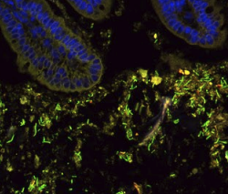

Intestinal serotonin and fluoxetine exposure modulate bacterial colonization in the gut
Intestinal serotonin and fluoxetine exposure modulate bacterial colonization in the gut
This study uncovers how serotonin signaling in the gut influences the microbial community, particularly focusing on spore-forming bacteria. By using genetic models and pharmacological approaches, we demonstrated that serotonin promotes specific bacterial growth, while fluoxetine alters this balance by inhibiting serotonin uptake.
Impact: These findings highlight a novel interaction between gut microbes and host serotonin, shedding light on how common antidepressants may influence gut health and suggesting potential new avenues for microbiome-targeted therapies.